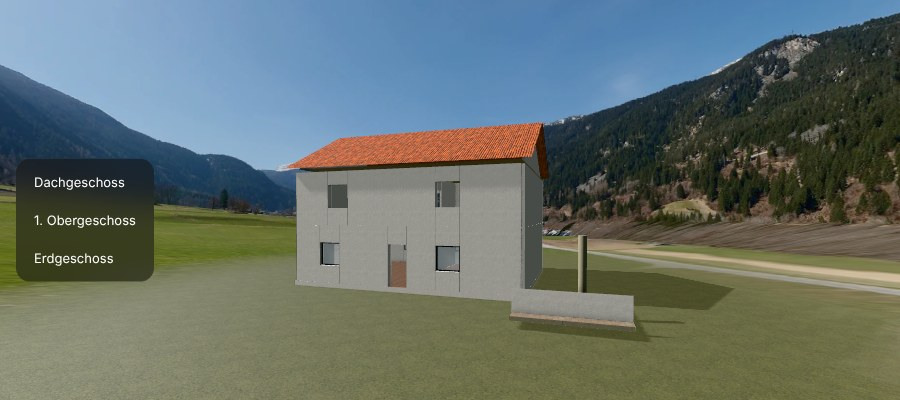
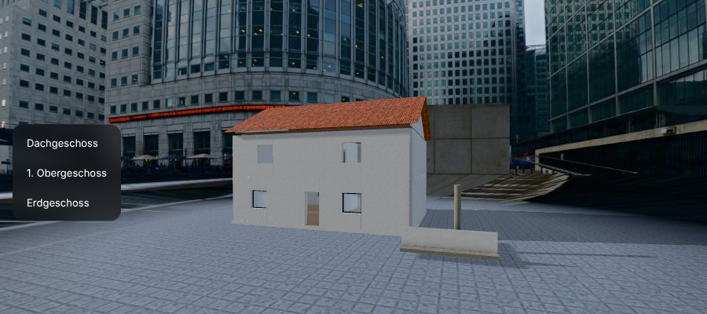
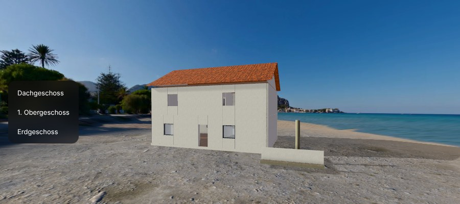

Ein zweigeschossiges Wohnhaus mit Satteldach, großzügigen Fensterflächen und einer Terrasse nach Süden.
Die Räume öffnen sich zum Garten; eine einläufige Treppe verbindet Erdgeschoss und Obergeschoss.
Beispieltext für den Rundgang.
Erdgeschoss · Fläche ca. 91,6 m² (aus dem Modell gemessen)
Beispieltext für den Rundgang.
1. Obergeschoss · Fläche ca. 48,3 m² (aus dem Modell gemessen)
Beispieltext für den Rundgang.
1. Obergeschoss · Fläche ca. 44 m² (aus dem Modell gemessen)

